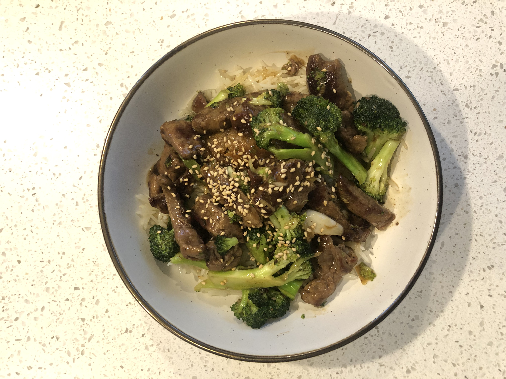

Easy Beef and Broccoli
1/2 pound of shredded beef
2 cups of broccoli
Teriyaki sauce of your choice
About 1 cup of rice
2 tablespoons Sesame seeds
Whatever else you want to throw in there
- Get a suace pan ready under medium heat and add about a tablespoon of olive oil
- Add the beef and cook it about half way down
- Add the broccoli and teriyaki sauce and bring the heat down to a simmer
- I like my broccoli a bit firm, but cook until you're satisfied
- Once ready, add over rice and sprinkle some sesame seeds amd Enjoy!
Home